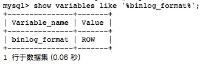
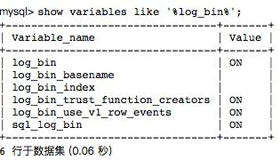
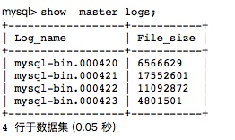
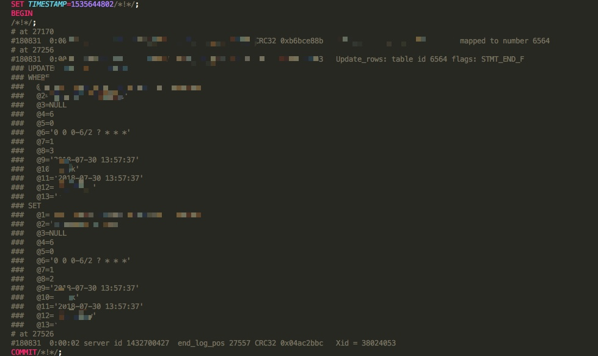

使用mysqlbinlog查看日志
mysqlbinlog说明
binlog日志是mysql的所有操作的日志记录，它是一种二进制数据。通过它可以对数据库的误删除、表误更新、数据误操作进行恢复。mysqlbinlog就是专门来处理binlog日志的命令。 通过此命令可以导出binlog日志，也可以转换binlog日志为sql语句。
下面的内容暂时不讨论数据恢复的问题，我们讨论下当我们将binlog日志下载下来或者在线对binlog日志进行分析查找问题的方式方法。
首先要确认你的数据库日志格式是row，root用户登陆数据库后，执行命令：
show variables like '%binlog_format%';

mysql数据库日志格式有三种；Statement，Mixed，Row，这里我不做过多介绍，这里需要通过日志恢复数据的日志格式必须是Row。
查看是否开启了binlog
show variables like '%log_bin%';

如果看到log_bin的值为ON，开启状态，OK，我们数据库可以还原。
开启binlog功能
-
编辑 vim /etc/my.cnf，加上 log-bin =/app/mysql_binlog/mysql-bin，顺便加上 expire_logs_days=7，后面的配置代表保留7天日志.
-
接着创建/app/mysql_binlog文件夹。
-
最后重启mysql，service mysqld restart
查看binlog文件
show master logs;

命令
/usr/local/mysql/bin/mysqlbinlog --base64-output=decode-rows -v /usr/local/mysql/var/mysql-bin.000400 --database=mydatabase --start-datetime='2018-08-31 18:10:01' --stop-datetime='2018-08-31 19:30:01' > 20180905.sql
也可以：
mysqlbinlog --base64-output=decode-rows -v mysql-bin.000400 --database=mydatabase --start-datetime='2018-08-31 18:10:01' --stop-datetime='2018-08-31 19:30:01' > 20180905.sql
解释： mysqlbinlog 将日志目录下的 mysql-bin.000400 转化为 20180905.sql 。
- database 为要导出的数据库名称
注意这里是从mysql-bin.000400找到数据库名称为我们设置这个参数值的名称的数据,不是要导出到哪个数据库名称的意思。
-
base64-output=decode-rows 意思是将二进制数据转换成可正常显示的SQL语句，例如update，insert等语句。
-
start-datetime 数据中需要导出的起始时间
-
stop-datetime 数据中需要导出的结束时间
至此就可以打开此sql文件进行数据分析了。 文件中的示例： 
参考文献：
Mysql 使用 mysqlbinlog将日志转为sql文件 恢复数据库